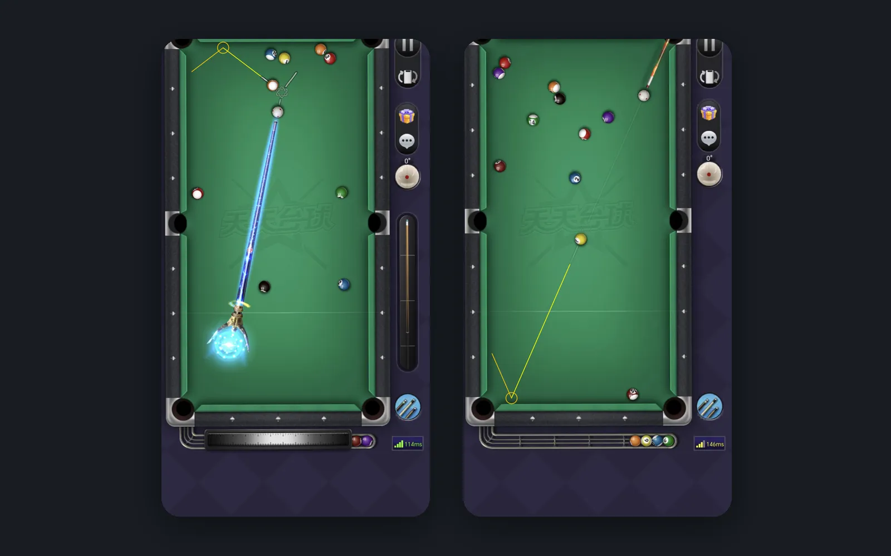

返回作品列表
台球延长线

项目背景
给自己做的练球辅助工具
这是我给自己做的一个"练球辅助工具"。平时打台球手游的时候，总是瞄不准，想有个辅助线，但又不想用外挂被封号。市面上也没有现成的工具，于是干脆自己做了一个。
说是"练球辅助"，其实主要是想玩一玩 Android 的图像识别和悬浮窗技术，找个实际的项目练练手。
核心挑战
不修改游戏数据，怎么实现辅助瞄准
直接修改游戏数据的外挂很容易做，但那是会被封号的，也没意思。真正有挑战的是：完全不碰游戏进程，只通过"看"屏幕画面来判断球的位置和球杆方向，然后计算出轨迹。
另一个挑战是实时性——每帧都要做图像识别和计算，还不能拖慢游戏的 60fps 帧率。如果辅助线延迟个一两帧，那就完全没用了。
解决方案
截屏 + OpenCV + 悬浮窗，全程"只读"
原理很简单：用 Android 的 MediaProjection API 截取屏幕画面，用 OpenCV 识别桌面上的球和球杆方向，然后计算出击球路线，画在一个悬浮窗上。因为是画在悬浮窗里而不是修改游戏数据，所以不会被检测成外挂。
核心功能有三个：一是基础瞄准线，从母球沿着球杆方向一直延长到碰到库边或其他球；二是翻袋线，可以计算球碰到库边后的反弹路径；三是进球线，显示目标球进袋的瞄准点。
做这个 App 最大的挑战是实时性。最后通过 ROI 裁剪（只处理桌面区域，不是全屏）、多线程处理（识别和绘制分开跑）、以及一系列 OpenCV 参数优化，把单帧处理时间压到了 8ms 以内。
最终成果
单帧 8ms，不影响游戏帧率
目前这个工具在我的手机上跑得很稳——单帧处理 8ms 以内，游戏还是满帧跑，完全感觉不到延迟。用了之后胜率确实提升了不少，也算是"技术改变生活"吧。
目前只在小众圈子里分享，没上架 Google Play。毕竟算不算"作弊"这个事，每个人的标准不一样。我自己的定位是"练球辅助"，就像现实里台球厅的瞄准辅助器一样。